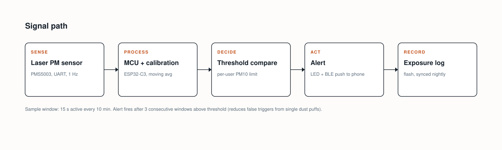
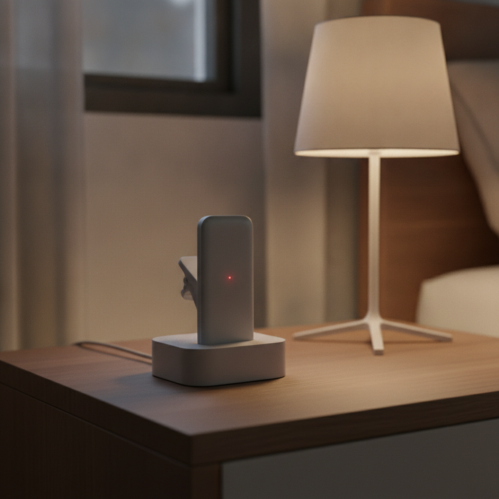
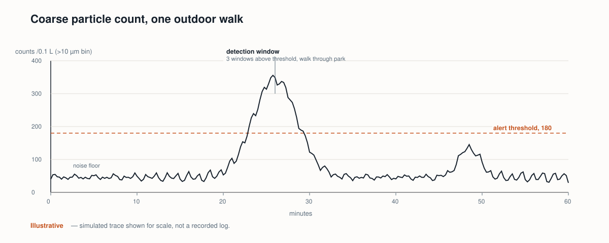
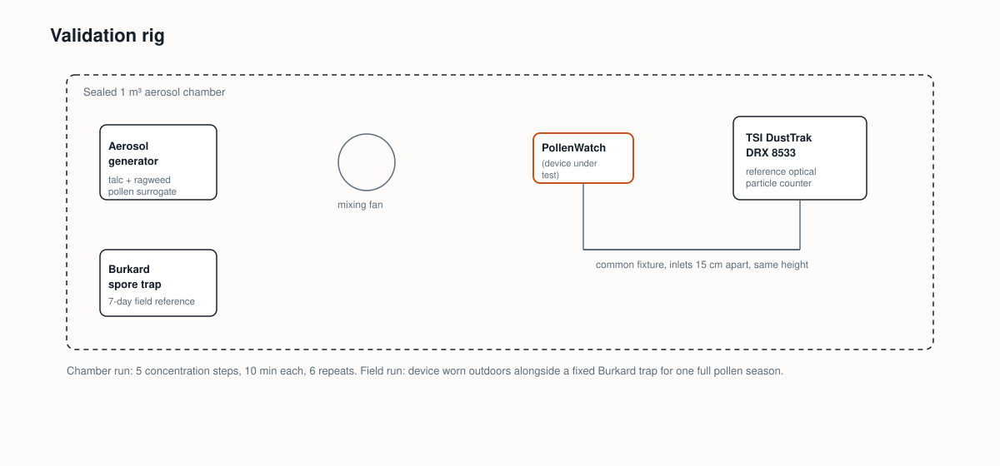
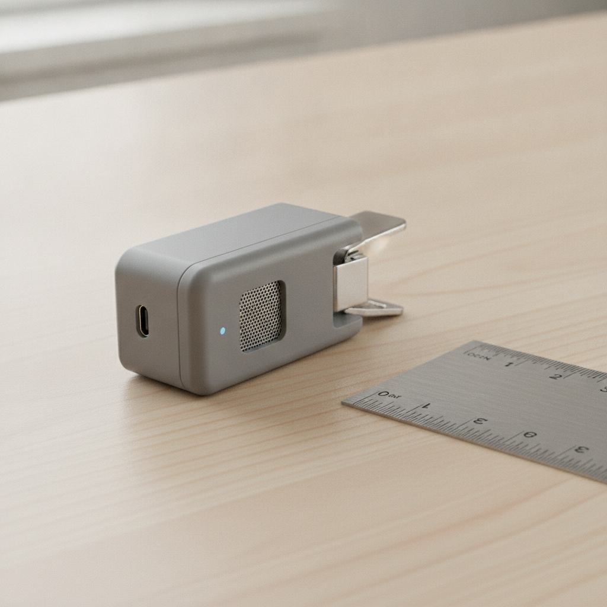
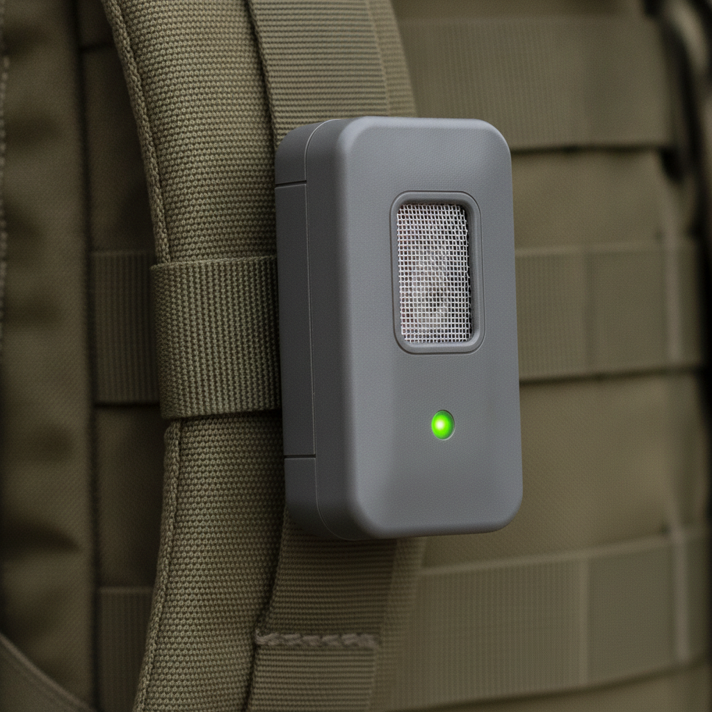
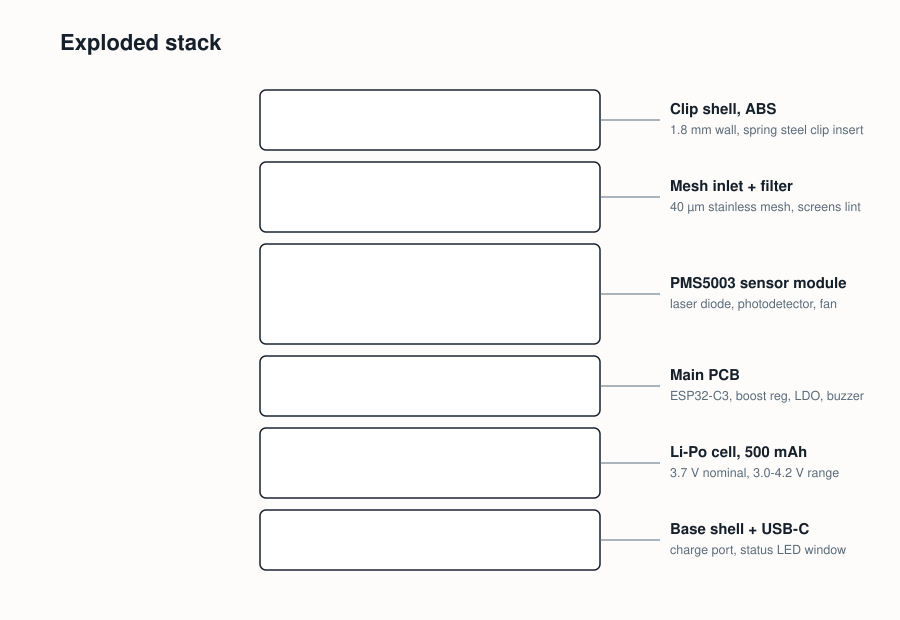
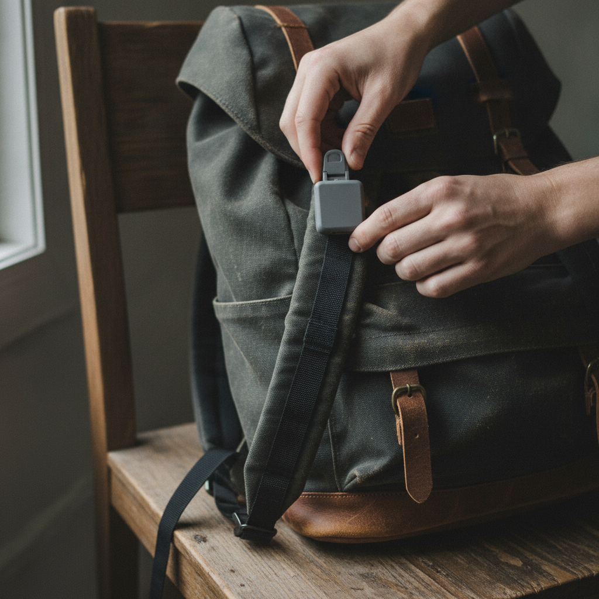
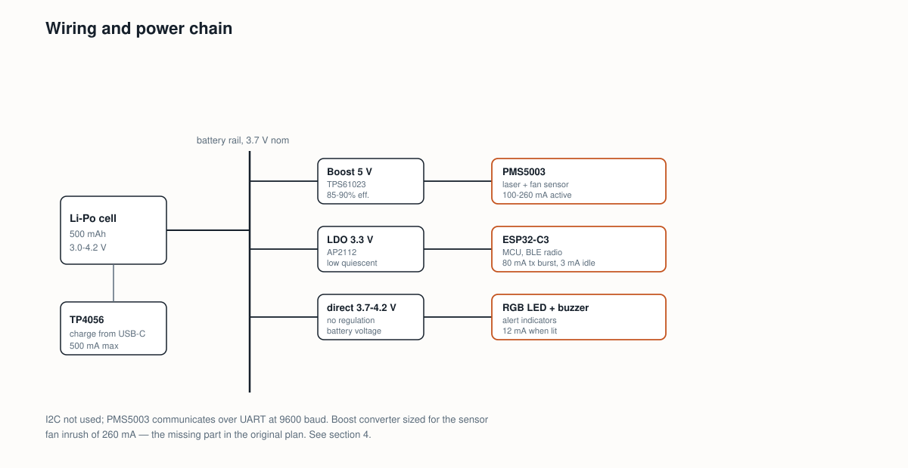

It clips to a shoulder strap, samples outdoor air every few minutes, and buzzes before an allergy flare, not after.
Constraint: it has to run a school day on one charge and survive being knocked against a locker.


The one non-obvious step is DECIDE: the alert only fires after three consecutive ten-minute windows above the wearer's threshold, so a single dust puff from a passing car does not trigger a false buzz.
The laser sensor at the center of this device (a Plantower PMS5003) reports particle counts in six size bins, from 0.3 to over 10 micrometers. Grass and ragweed pollen run 18 to 30 micrometers, so the device tracks the coarse, over-10-micrometer bin as a proxy for pollen load, not a species count.
Two checks establish that the proxy is trustworthy. First, a chamber test: the device sits beside a TSI DustTrak DRX 8533, a reference-grade optical particle counter, in a sealed 1 cubic meter chamber. A generator aerosolizes talc mixed with ragweed pollen surrogate at five concentration steps, 10 minutes per step, 6 repeats each. Acceptance: the device's coarse-bin reading tracks the DustTrak's PM10 mass reading within 15% at every step, with R² of 0.90 or better across the full range. Live pollen was ruled out for this step; handling airborne allergen at volume needs a safety protocol beyond a school project's scope, so a talc-pollen surrogate stands in for particle size and density.
Second, a field test: the device is worn outdoors alongside a stationary Burkard volumetric spore trap, the standard instrument local pollen count stations already run, for one full local pollen season, about ten weeks. Acceptance: daily coarse-particle exposure from the device correlates with the trap's daily grain count at R² of 0.70 or better. The looser field bar reflects a real difference: the trap sits at one fixed rooftop location, and the device moves with the wearer through gardens, sidewalks, and indoor rooms all day.
If either number is missed, the fallback is not to ship anyway. A chamber miss means the six size bins are re-weighted against the DustTrak curve. A field miss below 0.5 means the coarse-bin proxy does not hold outdoors, and the page is revised to say so before any claim about detecting pollen exposure stands.


The brief implies telling ragweed from grass from tree pollen. That needs a fluorescence or spectral bioaerosol sensor, like a Poleno Mini, which costs upward of $15,000. The PMS5003's largest channel is a single undifferentiated "over 10 micrometers" bin, unable to separate 18-micrometer ragweed from 30-micrometer oak. Cut to a single coarse-particulate exposure index, and let the wearer's phone app pull the local pollen station's species breakdown separately.
A hardcoded EPA PM10 breakpoint, 155 µg/m³ over 24 hours, is a regulatory air-quality number, not an allergy trigger. Sensitized individuals report symptoms at pollen counts of 20 to 50 grains per cubic meter, far below any air-quality alert level, and the threshold that matters is different for every wearer. Replace the fixed number with a per-user threshold, set from the wearer's own symptom log in the companion app.
The original parts list ran the PMS5003 straight off the Li-Po cell. The sensor's datasheet requires 4.5 to 5.5 volts; a Li-Po tops out at 4.2 volts fully charged and averages 3.7 volts, so the sensor would never see a valid supply. Added a TPS61023 boost converter, sized for the sensor's 260 mA fan-startup inrush, between the battery rail and the sensor.
Prices are approximate, based on single-unit distributor pricing.



| Part | What it does | Price |
|---|---|---|
| Plantower PMS5003 | laser particle counter, 6 size bins | $24 |
| ESP32-C3 module | MCU and Bluetooth radio | $4 |
| TPS61023 boost converter | 3.7 V battery to 5 V for the sensor | $2 |
| AP2112 LDO | 3.3 V rail for the MCU | $0.50 |
| TP4056 charge module | USB-C charging for the cell | $1.50 |
| Li-Po cell, 500 mAh | battery | $5 |
| RGB LED + piezo buzzer | alert indicators | $1 |
| Stainless mesh + spring clip | inlet screen and strap mount | $2 |
| 3D-printed ABS shell, 2 halves | enclosure | $3 |
| Wire, connectors, screws | assembly | $2 |
| Total, one unit | $45 | |
Build two for about $90. One builder, one deadline, and a fried boost converter or a lost clip should not cost a week.
Telling a real spike from noise is the actual work. Lint at the mesh inlet, a puff of exhaust from a passing car, and fog on the optics from a cold-to-warm transition all raise the coarse-bin count the same way pollen does. The three-consecutive-window rule is the mitigation, and it gets tuned during the field test, not guessed at the bench.
The PMS5003 runs 4 to 6 weeks lead time from some distributors. If it is not in hand by the end of week 3, the fallback is a Sharp GP2Y1010AU0F infrared dust sensor, cheaper and shelf-stable, at the cost of the six size bins. That decision gets made at week 3, not week 7.
The dull failure mode: the spring clip loosens over a school day and the device dangles with its inlet against the fabric, or backpack lint clogs the mesh outright. Both are checked in the daily wear test, not just the lab bench.

Working specification. Not needed to understand the project.
